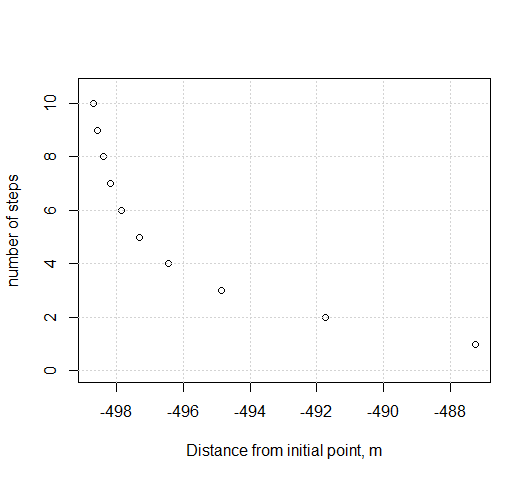

- Preface
- 1 Units in Fluid Mechanics
- 2 Properties of Water
- 3 Water Flowing in Pipes: Energy Losses
- 3.1 Important dimensionless quantity
- 3.2 Friction Loss in Circular Pipes
- 3.3 Solving Pipe friction problems
- 3.4 Solving for head loss (Type 1 problems)
- 3.5 Solving for Flow or Velocity (Type 2 problems)
- 3.6 Solving for pipe diameter, D (Type 3 problems)
- 3.7 Parallel pipes: solving a system of equations
- 3.8 Simple pipe networks: the Hardy-Cross method
- 4 Flow in open channels
- 5 Momentum in water flow
- 6 Pumps and how they operate in a hydraulic system
- References
4.6 Gradually varied steady flow
When water approaches an obstacle, it can back up, with its depth increasing. The effect can be observed well upstream. Similarly, as water approaches a drop, such as with a waterfall, the water level declines, and that effect can also be seen upstream. In general, any change in slope or roughness will produce changes in depth along a channel length.
There are three depths that are important to define for a channel: \(y_c\), critical depth, found using Equation (4.4) \(y_0\), normal depth, found using Equation (4.2) \(y\), flow depth, found using Equation (??)
If \(y_n < y_c\) flow is supercritical (for example, flowing down a steep slope); if \(y_n > y_c\) flow is subcritical. Variations in the water surface are classified by profile types based on to whether the normal flow is subcritical (or mild sloped, M) or supercritical (steep, S), as in Figure 4.3 (Davidian, Jacob 1984).
Figure 4.3: Gradually varied flow profiles

Figure 4.4: Gradually varied flow profiles
Typically, for supercritical flow the calculations start at an upstream cross section and move downstream. For subcritical flow calculations proceed upstream. However, for the direct step method, a negative result will indicate upstream, and a positive result indicates downstream.
If the water surface passes through critical depth (from supercritical to subcritical or the reverse) it is no longer gradually varied flow and the methods here do not apply. This can happen at abrupt changes in channel slop or roughness, or channel transitions.
4.6.1 The direct step method
The direct step method looks at two cross sections in a channel where depths, \(y_1\) and \(y_2\) are defined.

The distance between these two cross-sections, \({\Delta}X\), is calculated using Equation (4.19) \[\begin{equation} {\Delta}X=\frac{E_1-E_2}{\overline{S}-S_0} \tag{4.19} \end{equation}\] Where E is the specific energy from Equation (4.17), \(S_0\) is the slope of the channel bed, and \(S\) is the slopw of the energy grade line, estimated as the slope of the water surface. \(\overline{S}\) is the average of the S values at each cross section calculated using the Manning equation, Equation (4.2) solved for slope, as in Equation (4.20). \[\begin{equation} S=\frac{n^2\,V^2}{C^2\,R^{\frac{4}{3}}} \tag{4.20} \end{equation}\]
Example ?? demonstrates this. ::: {.example #gvfx1} Water flows at 10 m3/s in a trapezoidal channel with n=0.015, bottom width 3 m, side slope of 2:1 (H:V) and longitudinal slope 0.0009 (0.09%). At the location of a USGS stream gage the flow depth is 1.4 m. Use the direct step method to find the distance to the point where the depth is 1.2 m and determine whether it is upstream or downstream. ::: Begin by setting up a function to calculate the Manning slope and settign up the input data.
#function to calculate manning's slope
slope_f <- function(V,n,R,C) {
return(V^2*n^2/(C^2*R^(4./3.)))
}
#Now set up input data ##################################
#input Flow
Q=10.0
#input depths:
y1 <- 1.4 #starting depth
y2 <- 1.2 #final depth
#Define the number of steps into which the difference in y will be broken
nsteps <- 2
#channel geometry:
bottom_width <- 3
side_slope <- 2 #side slope is H:V. Use zero for rectangular
manning_n <- 0.015
long_slope <- 0.0009
units <- "SI" #"SI" or "Eng"
if (units == "SI") {
C <- 1 #Manning constant: 1 for SI, 1.49 for US units
g <- 9.81
} else { #"Eng" means English, or US system
C <- 1.49
g <- 32.2
}
#find depth increment for each step, depths at which to solve
depth_incr <- (y2 - y1) / nsteps
depths <- seq(from=y1, to=y2, by=depth_incr)First check to see if the flow is subcritical or supercritical and find the normal depth. Critical and normal depths can be calculated using the manningt function in the hydraulics package, as in Example ??. However, because other functionality of the rivr package is used, these will be calculated using functions from the rivr package.
rivr::critical_depth(Q = Q, yopt = y1, g = g, B = bottom_width , SS = side_slope)
#> [1] 0.8555011
#note using either depth for yopt produces the same answer
rivr::normal_depth(So = long_slope, n = manning_n, Q = Q, yopt = y1, Cm = C, B = bottom_width , SS = side_slope)
#> [1] 1.147137The normal depth is greater than the critical depth, so the channel has a mild slope. The beginning and ending depths are above normal depth. This indicates the profile type, following Figure 4.3, is M-1, so the flow depth should decrease in depth going upstream. This also verifies that the flow depth between these two points does not pass through critical flow, so is a valid gradually varied flow problem.
For each increment the \({\Delta}X\) value needs to be calculated, and they need to be accumulated to find the total length, L, between the two defined depths.
#loop through each channel segment (step), calculating the length for each segment.
#The channel_geom function from the rivr package is helpful
L <- 0
for ( i in 1:nsteps ) {
#find hydraulic geometry, E and Sf at first depth
xc1 <- rivr::channel_geom(y=depths[i], B=bottom_width, SS=side_slope)
V1 <- Q/xc1[['A']]
R1 <- xc1[['R']]
E1 <- depths[i] + V1^2/(2*g)
Sf1 <- slope_f(V1,manning_n,R1,C)
#find hydraulic geometry, E and Sf at second depth
xc2 <- rivr::channel_geom(y=depths[i+1], B=bottom_width, SS=side_slope)
V2 <- Q/xc2[['A']]
R2 <- xc2[['R']]
E2 <- depths[i+1] + V2^2/(2*g)
Sf2 <- slope_f(V2,manning_n,R2,C)
Sf_avg <- (Sf1 + Sf2) / 2.0
dX <- (E1 - E2) / (Sf_avg - long_slope)
L <- L + dX
}
cat(sprintf("Using %d steps, total distance from depth %.2f to %.2f = %.2f m\n", nsteps, y1, y2, L))
#> Using 2 steps, total distance from depth 1.40 to 1.20 = -491.75 mThe result is negative, verifying that the location of depth y2 is upstream of y1. Of course, the result will become more precise as more incremental steps are included, as shown in Figure ?? 
4.6.2 Standard step method
The standard step method works similarly to the direct step method, except from one known depth the second depth is determined at a known distance, L. This is a preferred method when the depth at a critical location, such as a bridge, is needed.
The rivr package implements the standard step method in its compute_profile function. To compare it to the direct step method, check the depth at \(y_2\) given the total distance from Example ??. ::: {.example #gvfx1} For the same channel and flow rate as Example ??, determine the depth of water at the distance L determined above, and compare it to the value above. ::: The function requires the distance to be positive, so apply the absolute value to the L value.
dist = abs(L)
ans <- rivr::compute_profile(So = long_slope, n = manning_n, Q = Q, y0 = y1, Cm = C, g = g, B = bottom_width, SS = side_slope, stepdist = dist/nsteps, totaldist = dist)
#Distances along the channel where depths were determined
ans$x
#> [1] 0.0000 -245.8742 -491.7483
#Depths at each distance
ans$y
#> [1] 1.400000 1.277009 1.200592This shows the distances and depths at each of the steps defined. Consistent with the above, the distances are negative, showing that they are progressing upstream. The results are identical for y2 using the direct step method.